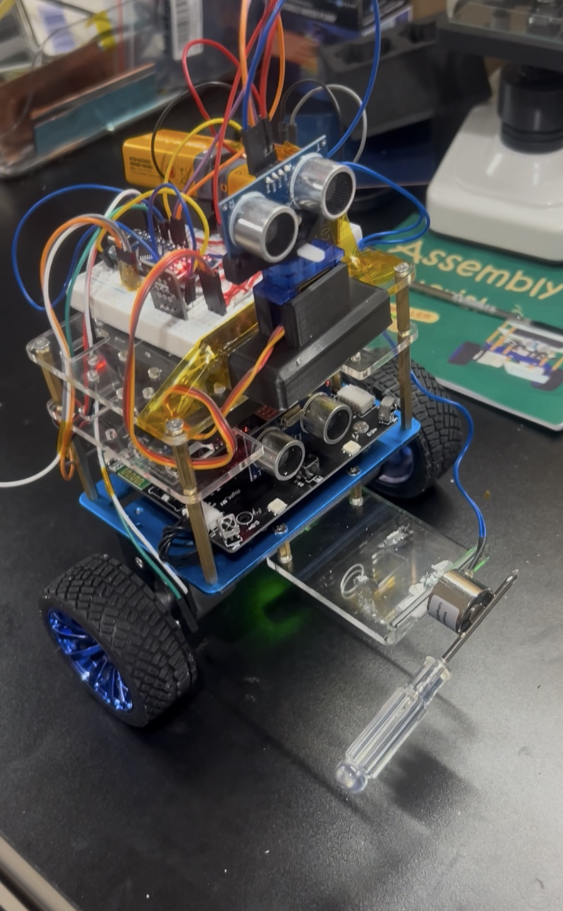

Fig. 4 Front-mounted electromagnet and object-retrieval mechanism.

My teammate Karina Champanery and I developed this self-balancing autonomous robot as the final project for ME 331: Mechatronics. The primary objective was to create a two-wheeled robot capable of maintaining its balance while autonomously navigating a maze. The robot was also required to locate, pick up, transport, and retrieve an object using a front-mounted electromagnet.
Unlike a conventional four-wheeled robot, this platform had to continuously correct its wheel motion to remain upright while simultaneously processing distance measurements and navigation commands.
Fig. 2 Closed-loop balancing test demonstrating the robot maintaining an upright position.
The balancing system used a PID control loop to continuously correct the robot’s body angle through its two drive motors. PID gains and encoder pulse rates were experimentally tuned until the robot could remain stable and move without tipping over. This control system provided the foundation for all autonomous navigation and object-retrieval operations.
Fig. 3 Autonomous maze-navigation test using ultrasonic obstacle detection.
Ultrasonic sensors measured the distance between the robot and surrounding obstacles. These measurements allowed the control program to identify walls, avoid collisions, and select movement directions while traveling through the maze. A servo motor adjusted the orientation of the upper ultrasonic sensor, allowing the robot to inspect different directions before selecting a path.
Two Arduino Nano microcontrollers divided the sensing and control workload. Communication logic was developed to transfer distance and movement data reliably between the controllers. Fixed-length responses, bounded sensor values, and checksum validation were used to prevent incomplete or corrupted data from producing incorrect robot movements.
Fig. 4 Front-mounted electromagnet and object-retrieval mechanism.
A front-mounted electromagnet allowed the robot to collect and transport a metal target. Because the electromagnet required more current than an Arduino output could safely provide, it was switched through a MOSFET control circuit. This allowed the program to activate and deactivate the magnet at the correct stages of the retrieval sequence.
Fig. 5 Object pickup, transportation, and retrieval using the electromagnet.
My contributions included assembling the robot, verifying the wiring and schematics, and tuning the control values required for stable balancing. I developed the base autonomous-control code, integrated the ultrasonic sensors and servo motor, and programmed the RF communication and electromagnet controls. I also tested and debugged the combined system to improve the reliability of its balancing, navigation, and retrieval functions.
The completed project demonstrated the integration of closed-loop control, embedded systems, sensing, actuation, and autonomous decision-making on a single mobile platform. The robot successfully balanced while moving, navigated through a maze using environmental feedback, and retrieved an object with its electromagnet. This project provided practical experience developing a mechatronic system in which mechanical, electrical, and software components had to operate together in real time.